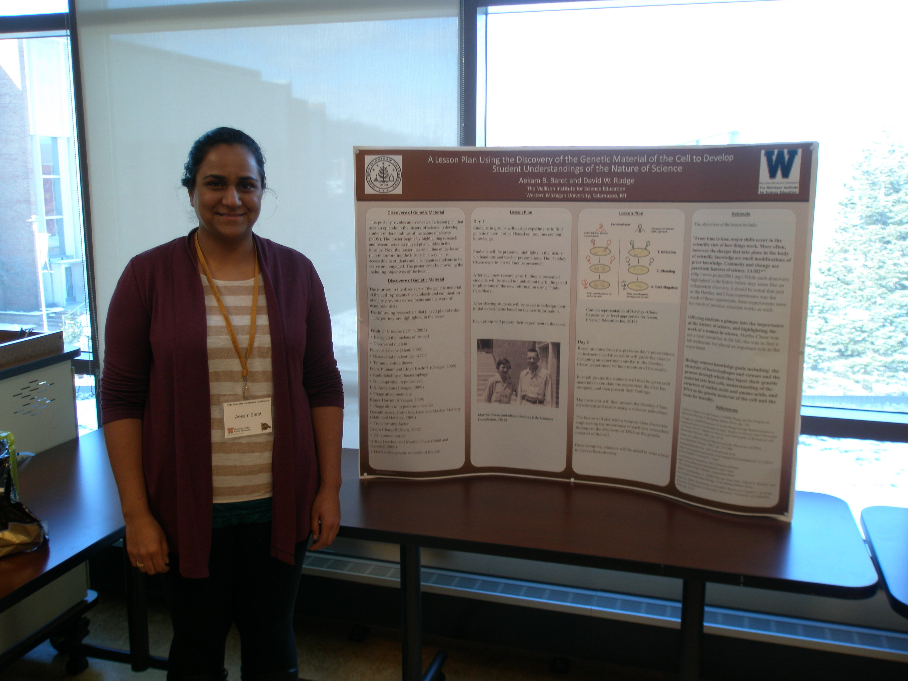

to develop Student Understanding of the Nature of Science Aekam B. Barot and David W. Rudge The Mallinson Institute for Science Education
|
|
| Abstract: The following poster proposes a lesson plan that will use an episode in the history of science, the discovery of DNA as the genetic material of the cell, to develop student understandings of the nature of science (NOS). During this active learning lesson students will attempt to design an experiment to discover the genetic material of the cell. As students refine their experiment they will be introduced to episodes in history to help guide their ideas, such as the use of radioisotopes, and the discovery of bacteriophages. After the introduction of each episode of history students will be asked to discuss their experiments and reflect on how the new information changes the experiment they propose. In this way students are able to have an experience during which they think about science research as the result of small changes in their prior knowledge. The lesson will end with a discussion emphasizing to students that without the experiments that were presented they would not be able to design the experiment they have designed, and that two scientists had a similar experience. They will then be introduced to Alfred Hershey and Martha Chase. Some biographical information will be given, including Martha Chase's role in the lab, and they will then be introduced to the Hershey-Chase experiment and asked to compare it to their proposed experiment. When thinking about the possible results, students will be given excerpt from Alfred Hershey's autobiographical work addressing how he came to the experiment and what he expected. They will then go through a simulation of the Hershey-Chase experiment. At the end of the lesson students will be asked to write a brief in class reflection essay, pointing out what they learned about the nature of science. They will be asked to focus on how they see science progressing over time. And what they think goes into making discoveries and designing experiments. This lesson plan addresses a nature of science learning objectives outlined in Project 2061 Benchmarks: "From time to time, major shifts occur in the scientific view of how things work. More often, however, the changes that take place in the body of scientific knowledge are small modifications of prior knowledge. Continuity and change are persistent features of science. 1A/H2*" History is vital to address the NOS objective; using examples of experiments that have actually been done in the past students are able to see that this was part of the actual process that lead up to the experiments to discover the genetic material of the cell. Student understandings of the NOS will be assessed using the reflection essay and pre and post lesson questions from the Views on Science Technology Society (VOSTS) survey. The lesson also addresses biology content knowledge, including the functioning of bacteriophages, the use of radioisotopes as tracers, and DNA as the genetic material of the cell. The lesson can also serve to offer students a glimpse into the importance of the history of science and highlighting the work of a woman in science, Martha Chase. | |
| PRESENTATIONS | |
| Barot, A. & Rudge, D. "Formative Assessment in an Online Graduate Science Education Course." Society for the Advancement of Biology Education Research, University of Minneapolis, MN, 11-14 Jul 2013- poster | |
| Barot, A. & Rudge, D. "A Lesson Plan Using the Discovery of the Genetic Material of the Cell to Develop Student Understanding of the Nature of Science." Twelfth Biennial Meeting of the International History, Philosophy & Science Teaching Group (IHPST), University of Pittsburgh, Pittsburgh, PA, 20 Jun 2013 - poster | |
| Barot, A. & Rudge, D. "A Lesson Plan Using the Discovery of the Genetic Material of the Cell to Develop Student Understanding of the Nature of Science." Second Annual Graduate Humanities Conference, Western Michigan University, Kalamazoo, MI, 22 Mar 2013 - poster | |
Last updated on 5 Nov 2013.